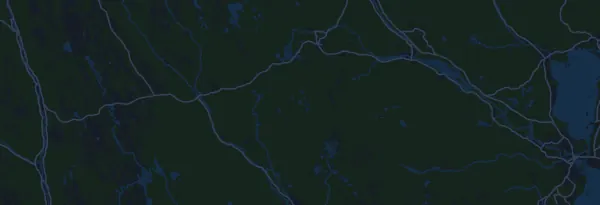

Ultravasan 90 91,7 km
- Distancia
- 91,7 km
- Desnivel positivo
- ↑ 1201 m
- Punto más alto
- 570 m s. n. m.
- Superficie
- Trail y sendero
- Perfil
- Ligeramente ondulado
- Salida
- 05:00 h
Perfil de altitud
Prepárate con Mila
Mila es un coach de running en una app. Si añades una carrera a tu plan, el coach planifica tus semanas hasta la salida según tu forma y te da un pronóstico de tiempo y un plan de ritmo, hidratación y energía para el recorrido.

La sesión justa. El día justo.
El recorrido

Sobre el recorrido
Ultravasan 90 es una carrera de trail de 91,7 km (Sälen (Berga by), Suecia). El recorrido acumula 1201 m de desnivel positivo y 1391 m de desnivel negativo, 13 m por km, así que es ligeramente ondulado. El punto más alto está a 570 m sobre el nivel del mar y el más bajo a 193 m.
La subida más grande empieza en el km 0,0: 182 m de desnivel en 3,4 km, con un 5,3 % de media, hasta los 570 m. En total, el recorrido tiene 15 subidas de al menos 25 m; la última empieza en el km 78,9.
En la app Mila, el coach describe el recorrido en detalle en tu idioma y planifica tu ritmo y tu avituallamiento.
Subidas
| Empieza en | Longitud | Desnivel | Pendiente | Cima (m s. n. m.) |
|---|---|---|---|---|
| km 0,0 | 3,4 km | 182 m | 5,3 % | 570 |
| km 7,2 | 710 m | 25 m | 3,6 % | 556 |
| km 10,3 | 2,3 km | 29 m | 1,2 % | 540 |
| km 13,6 | 3,5 km | 30 m | 0,9 % | 564 |
| km 28,2 | 6,2 km | 110 m | 1,8 % | 461 |
| km 36,5 | 3,1 km | 48 m | 1,5 % | 468 |
| km 42,6 | 610 m | 44 m | 7,1 % | 440 |
| km 43,8 | 1,1 km | 44 m | 4,0 % | 446 |
| km 46,3 | 2,2 km | 25 m | 1,2 % | 462 |
| km 55,5 | 730 m | 27 m | 3,7 % | 316 |
| km 60,0 | 1,6 km | 43 m | 2,7 % | 297 |
| km 61,7 | 1,1 km | 26 m | 2,4 % | 314 |
| km 67,0 | 820 m | 25 m | 3,1 % | 292 |
| km 70,6 | 1,7 km | 36 m | 2,2 % | 287 |
| km 78,9 | 1000 m | 26 m | 2,6 % | 263 |
Inscripción y dorsal
- La inscripción cierra el 21 de agosto de 2027.
- 2 025 kr hasta el 30 de abril de 2027 incluido.
- 2 125 kr hasta el 19 de agosto de 2027 incluido.
- 2 375 kr hasta el 21 de agosto de 2027 incluido.
Recogida de dorsales
- Viernes, 20 de agosto de 2027
Tävlingsexpeditionerna i Mora och Sälen dagen före loppet; nummerlappar som inte hämtats då finns i tävlingsexpeditionen på startplatsen i Sälen
Fuente: vasaloppet.se, consultado el 25 de octubre de 2026
Antes de la salida
Horas de salida
- 05:00 h
Fuente: vasaloppet.se, consultado el 15 de octubre de 2026
Preguntas frecuentes
¿Cuándo es Ultravasan 90 91,7 km?
Ultravasan 90 91,7 km se celebra el sábado, 21 de agosto de 2027. Comprueba la fecha y la hora de salida con el organizador.
¿A qué hora sale Ultravasan 90 91,7 km?
Según el organizador: 05:00 h.
¿Cuánto mide Ultravasan 90 91,7 km y cuánto desnivel tiene?
La carrera tiene 91,7 km, con 1201 m de desnivel positivo y 1391 m de desnivel negativo. El punto más alto está a 570 m sobre el nivel del mar.
¿Cómo es el recorrido de Ultravasan 90 91,7 km?
El recorrido es ligeramente ondulado, con 13 m de desnivel por km de media. Tiene 15 subidas de al menos 25 m; la mayor empieza en el km 0,0: 182 m en 3,4 km. Va de la salida a una meta situada en otro lugar. Se corre por senderos y caminos.
¿Cómo reparto el ritmo en Ultravasan 90 91,7 km?
Busca un esfuerzo constante más que un ritmo constante: deja que el ritmo baje en las subidas, recupéralo cuando el terreno se allane y contente en los primeros kilómetros. Las subidas más grandes empiezan en el km 0,0, km 28,2, km 36,5 y km 42,6. En Mila tienes un plan de ritmo para este recorrido, según tu propia forma.
Más carreras como esta
Más carreras cerca
- Stockholm Halvmaraton 21 km21 de agosto de 2027 · Stockholm, Suecia
- Fjällmaraton Sälen 42 km21 de agosto de 2027 · Sälen (Lindvallen, Experiumtorget), Suecia
- Midnattsloppet Göteborg 10 km21 de agosto de 2027 · Göteborg, Suecia
- Trailvasan 3021 de agosto de 2027 · Oxberg, Suecia
- Ultravasan 45 43,8 km21 de agosto de 2027 · Oxberg, Suecia
- Midnattsloppet Malmö 10 km28 de agosto de 2027 · Malmö, Suecia
Prepárate con Mila
La sesión justa. El día justo.
Los datos proceden del archivo del recorrido y de la información del organizador. Comprueba la fecha, las horas de salida y el reglamento con el organizador.
Mila no está vinculada al organizador ni a los patrocinadores de la carrera, ni está patrocinada o avalada por ellos. Los nombres y las marcas pertenecen a sus propietarios. ¿Organizador o titular de derechos? Solicitar un cambio o la retirada